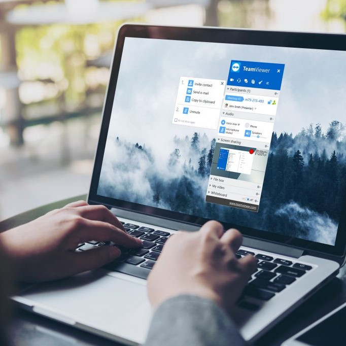

My NMI Certificate Experience
Welcome to my NMI portfolio
Certificate Summary
As of: May 12, 2021
Earning the Certificate has been a way for me to branch out of the nitty gritty things of computer science. Because the clases I take in the CS department at the University of Georgia focus more on the technical side instead of the design of certain apps, I feel like the certificate is a breathe of fresh air. For example, most of the projects I have created in my Operating Systems or Data Structures type classes all are coded in to run in terminal. We code and test the cases in terminal. However, the projects that I did in the Rich Media Production class catered toward more of my creative side. The New Media Certificate is exactly that. It caters towards my deisgn and creative side, which is something that I truly enjoy.


Course Summaries
New Media Capstone May 07, 2022
During my time in this course, I have learned how to work with group members and a new geographical data software! I learned how to work with ArcGIS, a client software used to build interactive web maps with ArcGIS Online, Esri's web-based mapping software. Just like learning any new language, I had to Google a lot of things and learned by trial and error. My skills were exercised by creating an entire interactive map from our client's data. It was interesting to see all the historical data come into play and find the correct tools I needed within the software to create a product that our client needed. Working with the team and Scott was a great experience overall. Most of my work was on the techincal side of setting up the WordPress site, finding hosting platforma slike Pantheon and learning how to fit our client's need while being money efficient. Learn more about our project here!
Course Summaries
Rich Media Production May 12, 2021
During my time in this course, I have learned a new language! I learned how to work with Swift, a language to develop IOS apps. Just like learning any new language, I had to Google a lot of things and learned by trial and error. My skills were exercised by creating small little apps or SwiftUI views. For exmaple, I enjoyed making a jukebox app with a Just Bieber theme. I took something I had interest in and created something that I genuinely liked. Because of the freedom of design Emuel gave us, the work that we were assigned did not feel like work. In my profession, I will definitely come across having to know an IOS development language. Knowing another language also looks better on my resume as well! One of my favorite projects that I did in this class was my final project. In recent events of Asian-American Violence, I wanted to create an application that would help with finding/displaying resources. I also want to implement some sort of forum or place where you can post your thoughts on recent events, allowing those effected to get feelings off their chest. The app also features contents from Asian-American creators/artists. This is to be able to celebrate their hard work and spread the awareness. It also includes a Splash page, which is the loading page before the app data actually opens or loads. (You can scroll through the pictures of the app in the carousel above. Overall, I enjoyed the course because of trhe creative freedom that Emuel gave!!
Courtney Yap
I decided to pursue the New Media Institute Certificate because I wanted to branch out in my programming skills. A lot of the work at CS is very 'old school' and I wanted to learn about more new technology.
My Favorite Classes
-
NMIX 4310
Rich Media Production -

CSCI 1301
Intro to Computing and Programming -
NMIX 4510
New Media Capstone